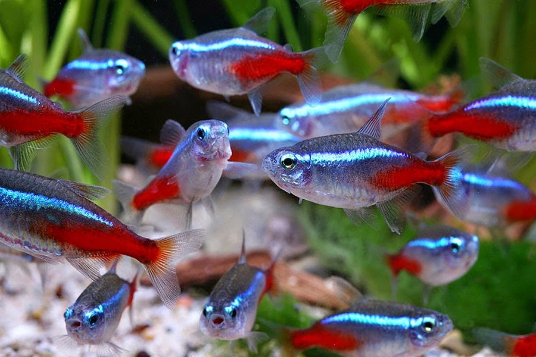
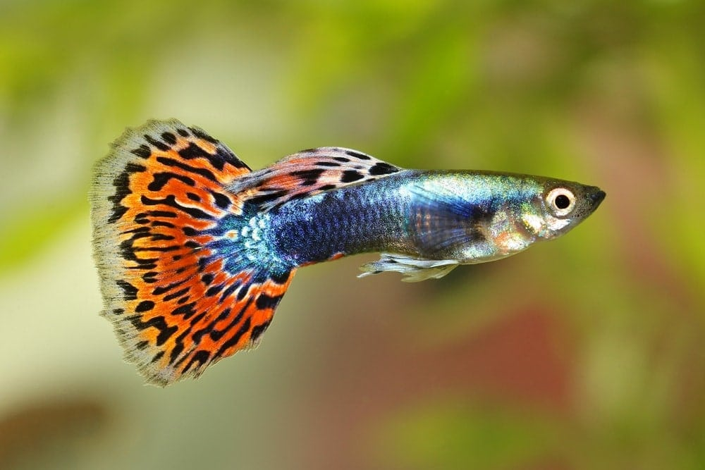
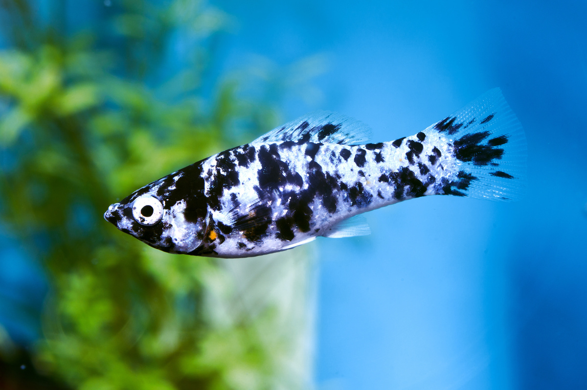
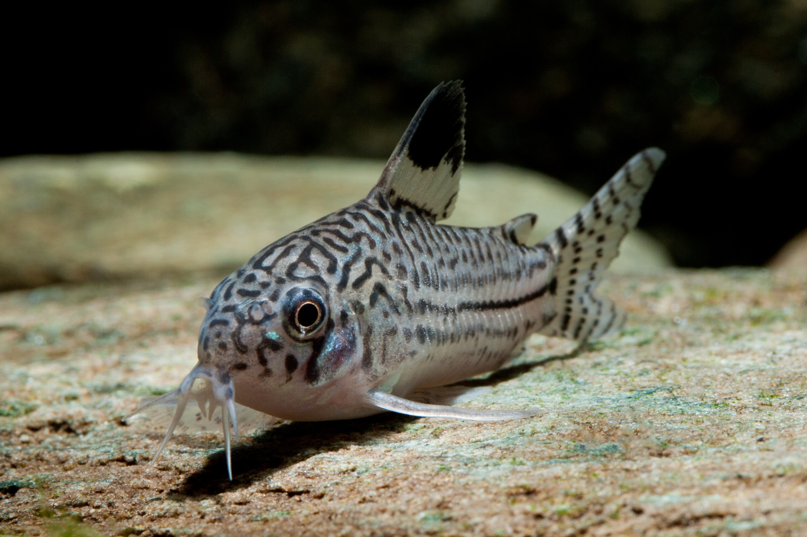
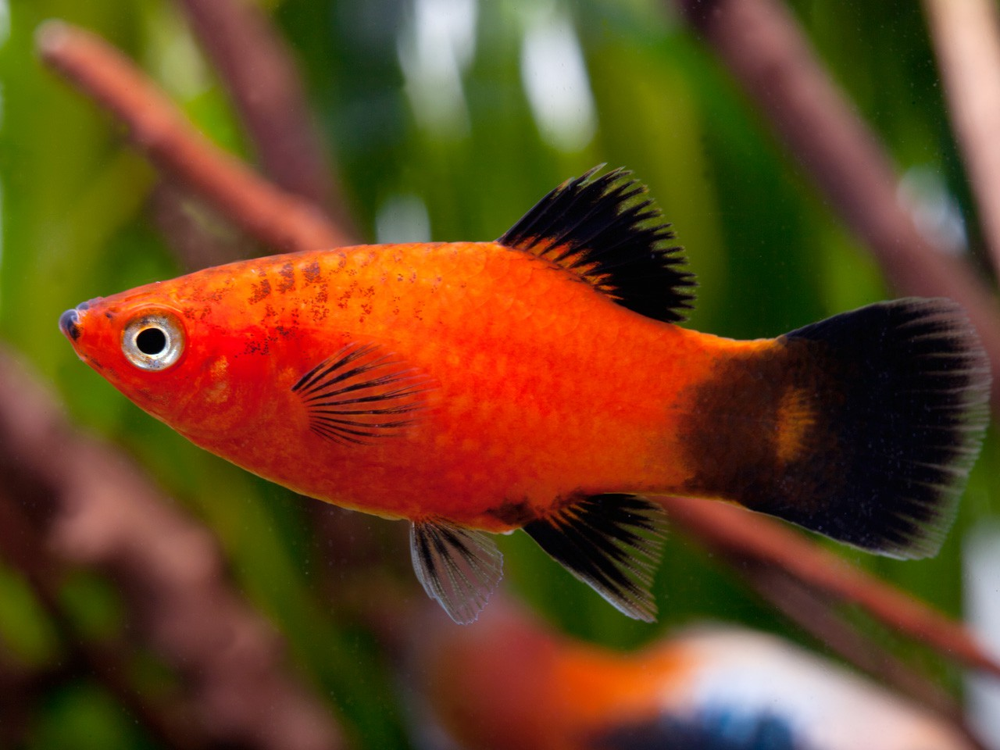

Configuração do Aquário e Cuidados com Peixes
Aqui estão informações sobre como configurar um aquário e cuidar de peixes.
Configuração do aquário
- Tamanho do aquário: O tamanho mínimo recomendado para iniciantes é de 40 litros, mas aquários maiores são mais estáveis para manter a qualidade da água.
- Filtragem: Instalar um bom filtro é essencial para manter a água limpa e garantir um ambiente saudável para os peixes.
- Substrato e decoração: Escolha um substrato adequado (como cascalho ou areia) para o fundo do aquário.
- Ciclo da água: Antes de adicionar peixes, é necessário "ciclar" o aquário.
- Controle de temperatura: Instale um aquecedor e um termômetro se o aquário for para peixes tropicais.
- Iluminação: Use uma luz específica para aquários, que também ajuda no crescimento de plantas aquáticas.
- Troca parcial de água: Trocas de água de 10 a 20% devem ser feitas semanalmente para manter a qualidade da água.
Tipos de peixes para aquários
-
Peixe Betta (Betta splendens)

Colorido e de fácil manutenção, o Betta é ideal para aquários pequenos.
- Cuidados: Aquários de 10 litros ou mais, com temperatura em torno de 26°C.
Peixe Neon Tetra (Paracheirodon innesi)
Pequenos e pacíficos, os Neons Tetra vivem em cardumes e têm uma faixa azul neon que brilha.
- Cuidados: Recomendado manter em grupos de 6 ou mais, em aquários de 40 litros com temperatura entre 22°C e 26°C.
Guppy (Poecilia reticulata)
Fáceis de cuidar, são coloridos e se reproduzem rapidamente.
- Cuidados: Preferem água em torno de 24°C a 27°C, e devem ser mantidos em aquários com tampas.
Molinésia (Poecilia sphenops)
Peixes ativos, que também se reproduzem facilmente.
- Cuidados: Precisam de um aquário de pelo menos 40 litros e água levemente alcalina com temperatura entre 24°C e 28°C.
Peixe Dourado (Carassius auratus)

Popular e robusto, o peixe dourado pode crescer bastante, por isso precisa de um aquário maior do que o imaginado.
- Cuidados: Necessita de aquários grandes, de pelo menos 60 litros por peixe, e água fria, sem aquecedor.
Corydora (Corydoras spp.)
Peixes de fundo que ajudam a manter o aquário limpo, alimentando-se de restos de comida e algas.
- Cuidados: Devem ser mantidos em grupos de 4 ou mais e precisam de aquários de 40 litros, com água em torno de 22°C a 26°C.
Platy (Xiphophorus maculatus)
Peixes resistentes e coloridos, fáceis de manter e que se reproduzem com facilidade.
- Cuidados: Necessitam de aquários de 40 litros ou mais, com temperatura entre 22°C e 28°C.
Cuidados gerais para peixes
- Alimentação: Forneça ração de boa qualidade específica para cada tipo de peixe, em pequenas quantidades para evitar excesso de comida e poluição da água.
- Monitoramento da água: Verifique regularmente os níveis de pH, temperatura, amônia, nitrito e nitrato para garantir um ambiente saudável.
- Atenção a doenças: Fique atento a sinais de doenças como manchas brancas (íctio), letargia ou perda de apetite.
- Iluminação e repouso: Os peixes precisam de ciclos regulares de luz e escuridão, portanto, desligue a iluminação do aquário à noite para permitir que eles descansem.
Com esses cuidados, seu aquário se tornará um ambiente estável e seguro para seus peixes, proporcionando um belo e relaxante ecossistema dentro de casa.